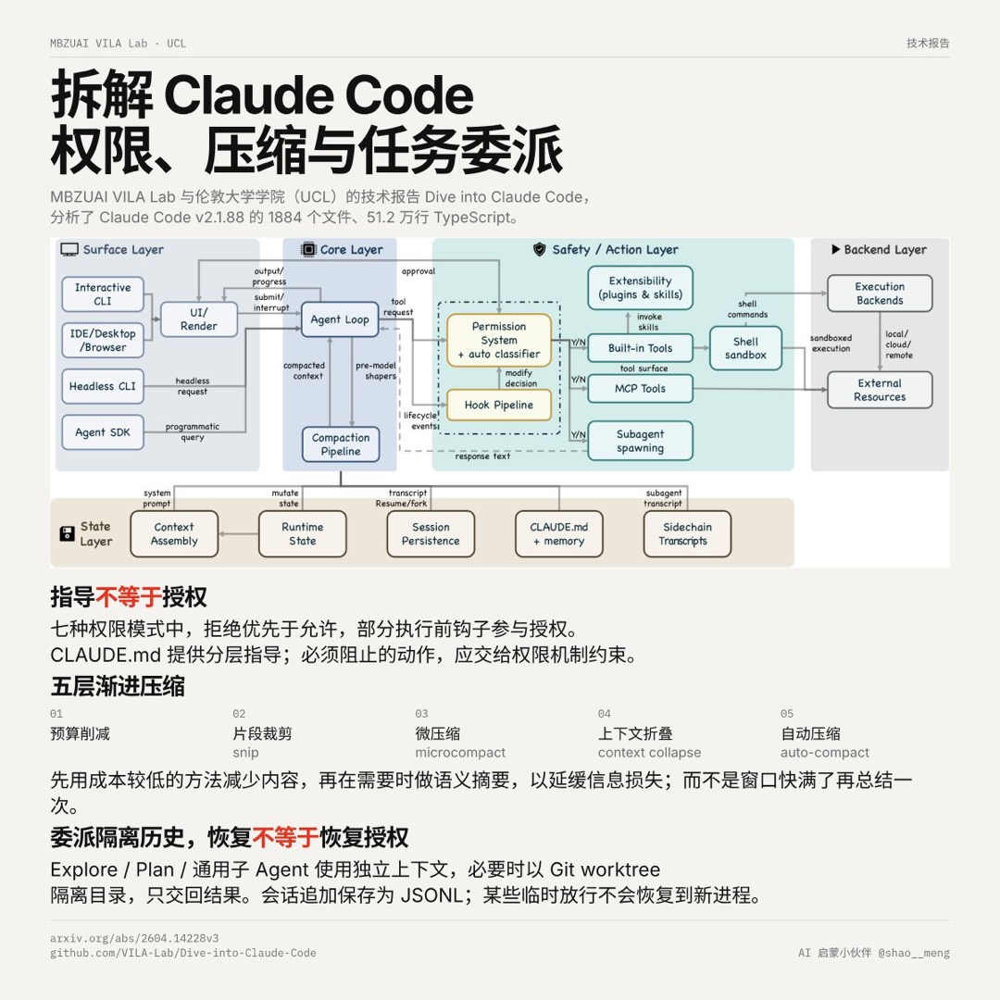
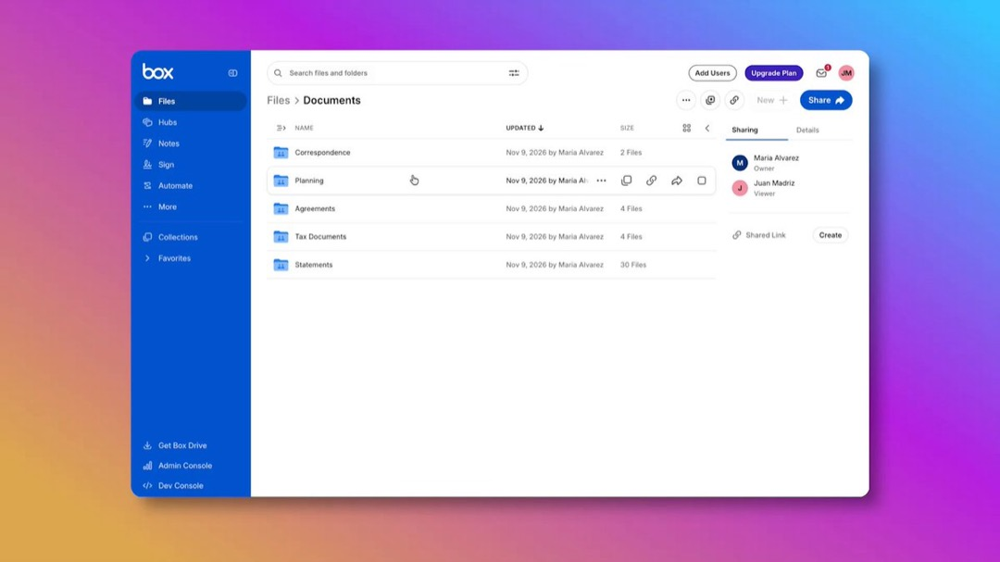

本期速览
01 K2 Horizon公开LLM训练细节
02 漏洞扫描器实测AI零误报
03 Claude Code五层上下文压缩机制
05 stitch-skills开源设计技能包
01｜K2 Horizon公开LLM训练细节
来源（X） · @alacheng · 2026-11-22 20:05
-极致开放性与可复现性：发布全部训练历史（380个中间检查点、覆盖各阶段）、21.6TB预训练数据、58次训练运行日志、17个代码仓库（含生产级xLLM框架、RL360强化学习栈、Eval360评估等）。不仅给数据，还详细公开生成约10T合成token的完整管道与决策过程，这是多数开源报告最回避的部分。
-架构与推理创新：提出Mixture-of-Value Attention（MoVA，将MoE应用于注意力值投影）和softplus注意力门控，用于增强推理。
-其中有个技术比较有特色，在后训练阶段采用了论文 ISO: An RLVR-Native Optimization Stack里的方法。把同一基础模型上训练出的多个 RL 专家（specialists）在固定谱的帧坐标下合并。无需后合并数据、rollout、梯度或蒸馏，效果优于 Task Arithmetic、TIES、RAM 等常见无数据合并方法。https://iso-rlvr.github.io/
https://arxiv.org/abs/2611.21003
02｜漏洞扫描器实测AI零误报
来源（X） · @HeLi8866 · 2026-11-22 12:54
很多 AI 项目看似牛逼，底裤其实早就漏了。随便一个提示词注入，或者忘删一个 API 密钥，分分钟能把你的系统干穿。
推荐所有项目都挂上这个逆天级别的安全审计神器⬇️：
vulnerability-scanner。
它到底有多狠？
→ 专杀 AI 软肋：直接检测提示词注入、不安全的 Agent 工具、暴露的密钥和带毒的依赖库。
→ 扒得底朝天：连你的 MCP 服务器、技能代码、钩子，甚至 CLAUDE.md 文件都会全盘审查。
→ 火力全覆盖：精准识别 OWASP 漏洞和 CI/CD 流水线里的致命风险。
→ 直接给解法：发现漏洞不仅报坐标，还会把攻击手法、影响范围、修复方案直接甩你脸上。
最特么良心的是——纯只读模式！ 绝不会乱改你一行代码，安全无痛。
实测数据极其硬核：
✅ 7/7 次运行全部自动激活
✅ 7 个诱饵测试，0 误报
✅ 完美兼容 6 大主流编码代理
一行命令，直接给你的项目穿上防弹衣：
npx claude-code-templates@latest --skill security/vulnerability-scanner
传送门：
https://www.aitmpl.com/component/skills/security/vulnerability-scanner
03｜Claude Code五层上下文压缩机制
来源（X） · @shao__meng · 2026-11-22 13:07
MBZUAI VILA Lab 与伦敦大学学院（UCL）团队的技术报告「Dive into Claude Code」，分析了 Claude Code v2.1.88 的 1884 个文件、51.2 万行 TypeScript。
论文：
https://arxiv.org/abs/2604.14228v3
开源项目：
https://github.com/VILA-Lab/Dive-into-Claude-Code
# 一条主循环，连接多种使用入口
核心 queryLoop() 反复完成几件事：组装上下文、调用模型、接收工具请求、检查权限、执行工具，再将结果交回模型。
交互终端、无头命令行、Agent SDK 和 IDE 等入口共用这条主路径。模型提出下一步动作，运行框架负责决定能否执行、如何执行，以及失败后怎样继续。架构图中，压缩、权限、钩子和持久化都围绕这条循环展开。
# 权限控制与文字指令承担不同职责
论文梳理了七种权限模式，既包括规划、默认、自动接受编辑等模式，也包括受功能开关控制的自动审核模式，以及供子 Agent 向父进程请示的内部模式。拒绝规则优先于允许规则，部分执行前钩子也参与授权判断。
CLAUDE.md 则按托管、用户、项目和本地等层级加载，向模型提供指导。文字指导不保证模型一定遵守，需要阻止的动作仍应通过权限机制约束。这一区分，对设计企业 Agent 尤其重要。
# 上下文通过五层机制逐步收缩
报告识别出预算削减、片段裁剪（snip）、微压缩（microcompact）、上下文折叠（context collapse）和自动压缩（auto-compact）五层处理。
基本思路是先用成本较低的方法减少内容，再在需要时进行语义摘要，尽量延缓信息损失。上下文管理因此是一套持续运行的流程，远比“窗口快满了再总结一次”细致。
扩展也有不同入口：MCP、插件、技能和钩子分别承担工具接入、能力包装、任务指导及生命周期干预等职责，接入方式会影响上下文占用和执行行为。
# 委派任务，同时隔离工作历史
Explore、Plan 和通用子 Agent 在各自的上下文中运行，必要时借助 Git worktree 隔离工作目录，最后将结果交回父循环，避免把全部探索过程塞进主对话。
会话则以追加写入的 JSONL 记录保存。某些临时权限放行不会随记录恢复到新进程，说明“恢复工作进度”和“恢复授权状态”需要分开设计。

04｜Box Agents API接入A2A
来源（X） · @Box · 2026-11-18 07:29
中文译文
推出 Box Agents API。
基于开放的 A2A 协议构建，它让开发者能够在自己的应用和 AI 平台中调用 Box 的 AI agent，将 Box 的企业级内容能力带入客户已经在使用的 agent 工作流中。
了解更多：https://support.box.com/hc/en-us/articles/57485242868115-Box-Agents-API-over-A2A
原文
Introducing the Box Agents API.
Built on the open A2A protocol, it lets developers call Box AI agents from their own apps and AI platforms, bringing Box’s enterprise content capabilities into the agent workflows customers already use.
Learn more: https://support.box.com/hc/en-us/articles/57485242868115-Box-Agents-API-over-A2A

05｜stitch-skills开源设计技能包
来源（X） · @lxfater · 2026-11-21 21:30
谷歌实验室开源了一套设计技能包，叫 stitch-skills
GitHub 已经 1.1 万星，连续 4 天挂在热榜上
Stitch 是谷歌自家的 AI 画界面工具
写几句大白话或者丢张参考图，就能出网页和 App 界面
但以前画完原型还得自己对着敲代码
这次谷歌直接把画图、控审美、转代码拆成 16 个现成 Skill
装给 AI 编程工具就能直接干活！
具体能帮你干嘛？
16 个 Skill 里，最实用的就这三块：
1. 专门治 AI 的廉价模板味
有个管审美的技能，会先帮你定好配色、字体和排版规矩
后面画新页面全照着走，不会一页一个样
2. 设计稿直接转代码，旧网页还能倒回去改
画完界面能直接转成网页和手机端组件，甚至能做成产品演示视频
手头有旧网页的，也能反过来抽进 Stitch 里接着改
3. 一句话就能把多页面网站搭起来
哪怕只丢一句做个设置页，它也能先帮你补成具体界面要求
再按任务清单接力，一页一页把整站做完
但先别急着装，有两件事得提前说清楚：
第一，装完不能离线直接跑
得先按官方说明接上 Stitch 的服务接口（MCP），才能调它画图
第二，它是按通用标准写的
Codex、Claude Code、Cursor、Gemini CLI 这些主流工具都能装
不用换个工具就重折腾一套
平时拿 AI 做网页老被丑界面折磨的，可以去仓库翻翻
项目地址放这了👇
https://github.com/google-labs-code/stitch-skills